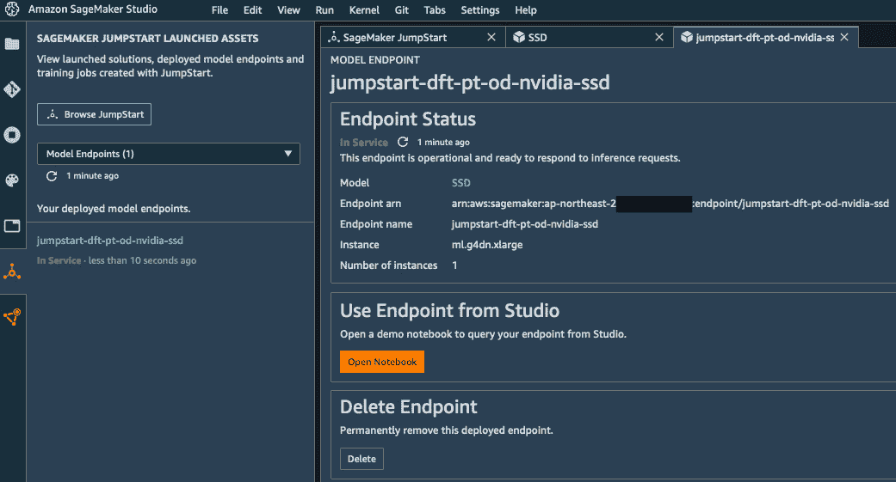

第一章:介绍亚马逊 SageMaker
机器学习 ( ML )从业者在他们的项目过程中使用大量的工具:开源库、深度学习框架等等。此外，他们经常不得不为自动化和编排编写自己的工具。管理这些工具及其底层基础架构既耗时又容易出错。
这正是亚马逊 SageMaker 旨在解决的问题(https://aws.amazon.com/sagemaker/)。亚马逊 SageMaker 是一项完全托管的服务，可以帮助您快速构建和部署机器学习模型。无论您是刚刚开始机器学习，还是经验丰富的从业者，您都会发现 SageMaker 的功能可以提高工作流的敏捷性以及模型的性能。您将能够 100%专注于手头的机器学习问题，而无需花费任何时间来安装、管理和扩展机器学习工具和基础设施。
在这第一章中，我们将了解 SageMaker 的主要功能是什么，它们如何帮助解决机器学习从业者面临的痛点，以及如何设置 SageMaker。本章将包括以下主题:
- 探索亚马逊 SageMaker 的功能
- 在本地机器上设置 Amazon SageMaker
- 设置 Amazon SageMaker 工作室
- 使用 Amazon SageMaker JumpStart 部署一键式解决方案和模型
技术要求
您将需要一个 AWS 帐户来运行本章中包含的示例。如果你还没有，请将你的浏览器指向https://aws.amazon.com/getting-started/以了解 AWS 及其核心概念，并创建一个 AWS 帐户。您还应该熟悉 AWS 免费层(https://aws.amazon.com/free/)，它允许您在一定的使用限制内免费使用许多 AWS 服务。
您需要为您的帐户安装和配置 AWS CLI(https://aws.amazon.com/cli/)。
您将需要一个工作的 Python 3.x 环境。安装 Anaconda 发行版(https://www.anaconda.com/)不是强制性的，但是我们强烈建议安装，因为它包含了我们将需要的许多项目(Jupyter、pandas、numpy等等)。
书中包含的代码示例可在 GitHub 上获得，网址为https://GitHub . com/packt publishing/Learn-Amazon-sage maker-second-edition。你需要安装一个 Git 客户端来访问它们(https://git-scm.com/)。
探索亚马逊 SageMaker 的功能
亚马逊 SageMaker 在 AWS re:Invent 2017 上推出。自之后，许多新功能被添加进来:你可以在https://aws.amazon.com/about-aws/whats-new/machine-learning看到完整的(且不断增长的)列表。
在本节中，您将了解 Amazon SageMaker 的主要功能及其用途。不要担心，我们将在后面的章节中深入研究它们。我们还会谈到 SageMaker 应用 编程 接口(API)，以及实现它们的软件 开发 工具包(SDK)。
亚马逊 SageMaker 的主要功能
亚马逊 SageMaker 的核心是在任何规模的完全托管基础设施上准备、构建、培训、优化和部署模型的能力。这让您可以专注于研究和解决手头的机器学习问题，而不是将时间和资源花费在构建和管理基础设施上。简而言之，您可以更快地从构建到培训再到部署。让我们放大每个步骤，突出相关的 SageMaker 功能。
准备的
Amazon SageMaker 包括强大的工具来标记和准备数据集:
- 亚马逊 SageMaker 地面真相:标注任意比例的数据集。常见用例的工作流是内置的(图像检测、实体提取等)，您可以实现自己的工作流。注释作业可以分发给属于私有、第三方或公共劳动力的员工。
- Amazon SageMaker 处理:使用自己用 scikit-learn 或 Spark 编写的代码运行批处理作业进行数据处理(以及其他任务，如模型评估)。
- Amazon sage maker Data Wrangler:使用图形界面，将数百个内置转换(或您自己的转换)应用于表格数据集，并单击一次将其导出到 Jupyter 笔记本。
- 亚马逊 SageMaker 要素商店:在亚马逊 S3 离线存储您的工程要素以构建数据集，或在线在预测时使用它们。
- 亚马逊 SageMaker Clarify :使用各种统计指标，分析你的数据集和模型中存在的潜在偏差，并解释你的模型如何预测。
建筑物
- 笔记本实例:完全托管的 Amazon EC2 实例，预装了最流行的工具和库:Jupyter、Anaconda 等等。
- 亚马逊 SageMaker Studio :机器学习项目的端到端集成开发环境，为众多 SageMaker 功能提供直观的图形界面。Studio 现在是运行笔记本的首选方式，我们建议您使用它而不是笔记本实例。
谈到算法实验，您可以从以下选项中进行选择:
- 用于机器学习和深度学习的 17 个内置算法的集合，已经实现并优化为在 AWS 上高效运行。没有机器学习代码可写！
- 一系列内置的开源框架( TensorFlow 、 PyTorch 、 Apache MXNet 、 scikit-learn 等等)，您只需在其中添加自己的代码。
- 在自己的容器中运行自己的代码:定制 Python、R、C++、Java 等等。
- 来自 AWS Marketplace 的用于机器学习的算法和预训练模型(https://AWS . Amazon . com/market place/solutions/machine-learning)。
- 在亚马逊 SageMaker JumpStart 中，一键即可获得机器学习解决方案和最先进的模型。
此外，亚马逊 SageMaker Autopilot 使用 AutoMachine learning 来自动构建、训练和优化模型，无需编写一行机器学习代码。
培养
如前所述，Amazon SageMaker 负责提供和管理您的培训基础设施。你再也不用花时间管理服务器，你可以专注于机器学习。除此之外，SageMaker 还带来了如下高级功能:
- 托管存储根据您的性能要求，使用亚马逊 S3、亚马逊 EFS 或亚马逊 FSx for Lustre。
- 管理现场培训，使用亚马逊 EC2 现场实例进行培训，以降低高达 80%的成本。
- 分布式培训使用数据并行和模型并行等高级技术，在托管实例集群上自动分配大规模培训任务。
- 管道模式将无限大的数据集从亚马逊 S3 传输到训练实例，省去了四处复制数据的需要。
- 自动模型调整运行超参数优化，以更快地提供高精度模型。
- 亚马逊 SageMaker 实验轻松跟踪、组织和比较你所有的 SageMaker 工作。
- Amazon SageMaker 调试器在训练期间捕获内部模型状态，检查它以观察模型如何学习，检测损害准确性的不想要的条件，并描述您训练工作的性能。
部署
正如培训一样，Amazon SageMaker 会照顾您所有的部署基础设施，并带来一系列附加功能:
- 实时端点创建一个 HTTPS API，为您的模型提供预测服务。如您所料，自动缩放是可用的。
- 批量转换使用 a 模型批量预测数据。
- 亚马逊弹性推理为基于 CPU 的端点添加分数 GPU 加速，为您的预测基础设施找到最佳性价比。
- Amazon SageMaker 模型监视器捕获发送到端点的数据，并将其与基线进行比较，以识别数据质量问题并发出警报(缺失功能、数据漂移等)。
- 亚马逊 SageMaker Neo 编译特定硬件架构的模型，包括嵌入式平台，并使用轻量级运行时部署优化版本。
- 亚马逊 SageMaker Edge Manager 帮助您在边缘设备上部署和管理您的模型。
- 最后但同样重要的是， Amazon SageMaker Pipelines 允许您构建端到端的自动化管道来运行和管理您的数据准备、培训和部署工作负载。
亚马逊 SageMaker API
就像所有其他 AWS 服务一样，Amazon SageMaker 由 API 驱动，这些 API 用 AWS 支持的语言 SDK 实现(https://aws.amazon.com/tools/)。此外，还有一个专用的 Python SDK，也就是 SageMaker SDK。让我们来看看两者，并讨论它们各自的好处。
AWS 语言 SDK
语言 SDK 为所有 AWS 服务实现特定于服务的 APIs、EC2 等等。当然也包括 SageMaker APIs，这里有记载:https://docs . AWS . Amazon . com/sage maker/latest/DG/API-and-SDK-reference . htmaChine learning。
说到数据科学和机器学习，Python 是最受欢迎的语言，那么我们来看看boto3中可用的 SageMaker APIs，Python 语言的 AWS SDK(https://boto 3 . Amazon AWS . com/v1/documentation/API/latest/reference/services/sage maker . htmaChine learning)。这些 API 相当低级且冗长:例如，create_training_job()有很多看起来不太明显的 JSON 参数。你可以在的下一张截图中看到其中的一些。你可能会认为这对于日常的机器学习实验来说看起来不是很有吸引力……我完全同意！
图 1.1–boto 3 中 create_training_job() API 的(部分)视图
事实上，这些服务级 API 并不意味着用于笔记本电脑的实验。他们的目的是自动化，通过定制脚本或基础设施作为代码工具，如AWS cloud formation(https://aws.amazon.com/cloudformation)和 terra form(https://terra form . io)。您的 DevOps 团队将使用它们来管理生产，他们需要完全控制每个可能的参数。
那么，你应该用什么来做实验呢？你应该使用亚马逊 SageMaker SDK。
亚马逊 SageMaker SDK
亚马逊SageMaker SDK(https://github.com/aws/sagemaker-python-sdk)是专门针对亚马逊 SageMaker 的 Python SDK。你可以在 https://sagemaker.readthedocs.io/en/stable/找到它的文档。
注意
已经尽了一切努力用最新的 SageMaker SDK(撰写本文时为 v2.58.0)来检查本书中的代码示例。
这里的抽象层次要高得多:SDK 包含模型、评估者、模型、预测者等等的对象。我们肯定回到了机器学习的领域。
例如，这个 SDK 使得启动一个培训工作(一行代码)和部署一个模型(一行代码)变得非常容易和舒适。基础设施问题被抽象出来，我们可以专注于机器学习。这里有一个例子。现在不要担心细节:
# Configure the training job
my_estimator = TensorFlow(
entry_point='my_script.py',
role=my_sagemaker_role,
train_instance_type='machine learning.p3.2xlarge',
instance_count=1,
framework_version='2.1.0')
# Train the model
my_estimator.fit('s3://my_bucket/my_training_data/')
# Deploy the model to an HTTPS endpoint
my_predictor = my_estimator.deploy(
initial_instance_count=1,
instance_type='machine learning.c5.2xlarge')
现在我们对亚马逊 SageMaker 有了更多的了解，让我们看看如何设置它。
在本地机器上设置 Amazon SageMaker
一个常见的误解是你不能在 AWS 云之外使用 SageMaker。显然，它是一种基于云的服务，其最具吸引力的功能需要云基础设施来运行。然而，许多开发人员喜欢以他们自己的方式建立他们的开发环境，SageMaker 让他们这样做:在这一节中，您将学习如何在您的本地机器或本地服务器上安装 SageMaker SDK。在后面的章节中，您将学习如何在本地训练和部署模型。
隔离 Python 环境以避免依赖性地狱是一个很好的实践。让我们看看如何使用两个流行项目来实现这一点:virtualenv(https://virtualenv . pypa . io)和 Anaconda(https://www.anaconda.com/)。
使用 virtualenv 安装 SageMaker SDK
如果您以前从未使用过本教程，请在继续之前阅读本教程:
- 首先，让我们创建一个名为
sagemaker的新环境，并激活它:$ mkdir workdir $ cd workdir $ python3 -m venv sagemaker $ source sagemaker/bin/activate
- 现在，让我们安装
boto3、 SageMaker SDK 和pandas库(https://pandas.pydata.org/)，这也是必需的:$ pip3 install boto3 sagemaker pandas
- 现在，让我们快速检查一下是否可以将这些 SDK 导入 Python:
$ python3 Python 3.9.5 (default, May 4 2021, 03:29:30) >>> import boto3 >>> import sagemaker >>> print(boto3.__version__) 1.17.70 >>> print(sagemaker.__version__) 2.39.1 >>> exit()
安装看起来很好。你自己的版本肯定会更新，这很好。现在，让我们用本地 Jupyter 服务器(https://jupyter.org/)运行一个快速测试。如果你的机器上没有安装 Jupyter，你可以在https://jupyter.org/install找到说明:
- 首先，让我们基于我们的虚拟环境创建一个 Jupyter 内核:
$ pip3 install jupyter ipykernel $ python3 -m ipykernel install --user --name=sagemaker
- 然后，我们可以发射 Jupyter:
$ jupyter notebook
- Creating a new notebook, we can see that the
sagemakerkernel is available, so let's select it in the New menu, as seen in the following screenshot:图 1.2–创建新笔记本
- 最后，我们可以通过导入 SDK 并打印其版本来检查它们是否可用，如下面的屏幕截图所示:
图 1.3–检查 SDK 版本
这就完成了与virtualenv的安装。不要忘记终止 Jupyter，并停用您的virtualenv:
$ deactivate
您也可以使用 Anaconda 安装 SDK。
使用 Anaconda 安装 SageMaker SDK
conda让您创建并管理隔离的环境。如果您以前从未使用过conda，您应该执行以下操作:
- 安装蟒蛇:https://docs.anaconda.com/anaconda/install/。
- 阅读本教程:https://docs . conda . io/projects/conda/en/latest/user-guide/getting-started . htmaChine learning。
我们将从以下步骤开始:
- 让我们创建并激活一个名为
conda-sagemaker:$ conda create -y -n conda-sagemaker $ conda activate conda-sagemaker
的新conda环境 - 然后，我们安装
pandas、boto3和 SageMaker SDK。后者必须与pip一起安装，因为它不是作为conda包提供的:$ conda install -y boto3 pandas $ pip3 install sagemaker
- 现在，让我们将 Jupyter 及其依赖项添加到环境中，并创建一个新的内核:
$ conda install -y jupyter ipykernel $ python3 -m ipykernel install --user --name conda-sagemaker
- 然后，我们可以发射 Jupyter:
conda-sagemakerkernel is present in the New menu, as is visible in the following screenshot:Figure 1.4 – Creating a new conda environment
- 就像上一节一样，我们可以使用这个内核创建一个笔记本，并检查 SDK 是否被正确导入。
使用conda完成安装。你是否更愿意用它而不是virtualenv很大程度上是个人喜好问题。你完全可以运行这本书里的所有笔记本，并用中的一个或另一个构建你自己的项目。
关于 AWS 权限的一句话
亚马逊身份和访问管理 (IAM)使您能够安全地管理对 AWS 服务和资源的访问(https://aws.amazon.com/iam)。当然，这也适用于 Amazon SageMaker，您需要确保您的 AWS 用户有足够的权限调用 SageMaker API。
IAM 权限
如果您不熟悉 IAM，请阅读以下文档:
https://docs . AWS . Amazon . com/IAM/latest/user guide/introduction . htma中文学习
您可以在其中一个 SageMaker APIs 上使用 AWS CLI 运行一个快速测试，例如list-endpoints。我在这里使用的是eu-west-1区域，但是您也可以使用离您最近的区域:
$ aws sagemaker list-endpoints --region eu-west-1
{
"Endpoints": []
}
如果收到抱怨权限不足的错误消息，则需要更新附加到 AWS 用户的 IAM 角色。
如果您拥有有问题的 AWS 帐户，您可以在 IAM 控制台中通过向您的角色添加AmazonSageMakerFullAccess托管策略来轻松地完成这项工作。注意，这个策略是非常宽松的:这对开发帐户来说没问题，但对生产帐户来说肯定不行。
如果您使用没有管理权限的帐户(如公司提供的帐户)，请联系您的 IT 管理员，为您的 AWS 用户添加 SageMaker 权限。
关于 SageMaker 权限的更多信息，请参考文档:https://docs . AWS . Amazon . com/sage maker/latest/DG/security-iam . htmaChine learning。
建立亚马逊 SageMaker 工作室
实验是机器学习过程的关键部分。开发人员和数据科学家使用一系列开源工具和库来进行数据探索、数据处理，当然还有评估候选算法。安装和维护这些工具需要相当多的时间，这些时间花在研究机器学习问题本身可能会更好！
亚马逊 SageMaker Studio 为您带来从实验到生产所需的机器学习工具。它的核心是一个基于 Jupyter 的集成开发环境，这使它变得非常熟悉。
此外，SageMaker Studio 还集成了其他 SageMaker 功能，如跟踪和比较所有作业的 SageMaker 实验，自动创建机器学习模型的 SageMaker Autopilot 等等。很多操作只要点几下就能实现，不用写任何代码。
SageMaker Studio 还进一步简化了基础设施管理。您不必创建笔记本实例:SageMaker Studio 为您提供了计算环境，随时可以运行您的笔记本。
注意
本节需要亚马逊 S3、亚马逊 VPC 和亚马逊 IAM 的基础知识。如果您对它们一点都不熟悉，请阅读以下文档:
https://docs . AWS . Amazon . com/Amazon S3/latest/dev/welcome . htma 中文学习
https://docs . AWS . Amazon . com/VPC/latest/user guide/what-is-Amazon-VPC . htma 中文学习
https://docs . AWS . Amazon . com/IAM/latest/user guide/introduction . htma 中文学习
现在可能也是一个很好的时间来看看(并标记)SageMaker 的定价页面:https://aws.amazon.com/sagemaker/pricing/。
加入亚马逊 SageMaker 工作室
您可以使用以下三个选项中的任何一个来访问 SageMaker Studio:
- 使用快速启动程序:这是个人账户最简单的选项，我们将在以下段落中详细介绍。
- 使用 AWS 单点登录 ( SSO ):如果你的公司设置了 SSO 应用，这可能是最好的选择。你可以在 https://docs . AWS . Amazon . com/sage maker/latest/DG/on board-SSO-users . htmaChine learning 了解更多关于 SSO onboarding 的信息。有关详细信息，请联系您的 IT 管理员。
- 使用亚马逊 IAM :如果你的公司不使用 SSO，这可能是最好的选择。您可以通过 https://docs . AWS . Amazon . com/sage maker/latest/DG/on board-iam . htmaChine learning 了解更多关于 SSO onboarding 的信息。同样，请联系您的 IT 管理员了解详细信息。
采用快速启动程序入职
快速启动程序有几个步骤:
- 首先，在亚马逊 sage maker Studio可用的地区之一打开 AWS 控制台，例如https://us-east-2.console.aws.amazon.com/sagemaker/。
- As shown in the following screenshot, the left-hand vertical panel has a link to SageMaker Studio:
图 1.5–打开 SageMaker Studio
- Clicking on this link opens the onboarding screen, and you can see its first section in the next screenshot:
图 1.6–运行快速启动
- Let's select Quick start. Then, we enter the username we'd like to use to log in to SageMaker Studio, and we create a new IAM role as shown in the preceding screenshot. This opens the following screen:
图 1.7–创建 IAM 角色
这里我们要做的唯一决定是是否允许我们的笔记本实例访问特定的亚马逊 S3 存储桶。让我们选择任意一个 S3 桶，点击创建角色。对于开发和测试来说，这是最灵活的设置，但是我们希望对生产应用更严格的设置。当然，我们可以稍后在 IAM 控制台中编辑这个角色，或者创建一个新角色。
- 一旦我们点击了创建角色，我们就返回到上一个屏幕。请确保为此帐户启用项目模板和 JumpStart。(这应该是默认设置)。
- 我们只需点击提交即可启动入职程序。根据您的帐户设置，您可能会看到一个额外的屏幕，要求您选择 VPC 和子网。我建议您选择默认 VPC 中的任何子网。
- A few minutes later, SageMaker Studio is in service, as shown in the following screenshot. We could add extra users if we needed to, but for now, let's just click on Open Studio:
图 1.8–启动 SageMaker Studio
如果这需要几分钟的时间，请不要担心，因为 SageMaker Studio 需要完成您的环境的首次运行设置。如下面的截图所示，一旦我们打开 SageMaker Studio，我们就会看到熟悉的 JupyterLab 布局:
注意
SageMaker 工作室是一个活生生的东西。当你读到这篇文章的时候，有些屏幕可能已经更新了。此外，您可能会注意到不同地区之间的细微差异，因为有些功能或实例类型在这些地区不可用。
图 1.9-sage maker Studio 欢迎屏幕
- 我们可以立即创建我们的第一个笔记本。在启动器选项卡中，在笔记本和计算资源部分，让我们选择数据科学，并点击笔记本–Python 3。
- This opens a notebook, as is visible in the following screenshot. We first check that SDKs are readily available. As this is the first time we are launching the Data Science kernel, we need to wait for a couple of minutes.
图 1.10–检查 SDK 版本
- As is visible in the following screenshot, we can easily list resources that are currently running in our Studio instance: an machine learning.t3.medium instance, the data science image supporting the kernel used in our notebook, and the notebook itself:

图 1.11–查看工作室资源
- To avoid unnecessary costs, we should shut these resources down when we're done working with them. For example, we can shut down the instance and all resources running on it, as you can see in the following screenshot. Don't do it now, we'll need the instance to run the next examples!
图 1.12–关闭实例
- Machine learning . T3 . medium是 Studio 使用的默认实例大小。您可以通过单击笔记本顶部的 2 vCPU + 4 GiB 切换到其他实例类型。这允许您选择一个新的实例大小，并在 Studio 中启动它。几分钟后，实例启动，您的笔记本代码已经自动迁移。如前所述，不要忘记关闭前一个实例。
- 当我们完成 SageMaker Studio 的工作后，我们所要做的就是关闭浏览器选项卡。如果我们想继续工作，我们只需要回到 SageMaker 控制台，点击打开工作室。
- 如果我们想关闭 Studio 实例本身，我们只需在文件菜单中选择关闭。在我们从 SageMaker 控制台中完全删除 Studio 之前，所有文件都将被保留。
现在我们已经完成了设置，我相信你已经迫不及待地想要开始机器学习了。让我们开始部署一些模型吧！
使用 Amazon SageMaker JumpStart 部署一键式解决方案和模型
如果你是机器学习的新手，你可能会发现很难开始现实生活中的项目。您已经运行了所有的玩具示例，并且已经阅读了几篇关于计算机视觉或自然语言处理模型状态的博客文章。现在怎么办？如何开始在自己的数据上使用这些复杂的模型来解决自己的业务问题？
即使你是一个经验丰富的从业者，构建端到端的机器学习解决方案也不是一件容易的事情。培训和部署模型只是等式的一部分:数据准备、自动化等等呢？
亚马逊 SageMaker JumpStart 是专门为打造的，旨在帮助每个人更快地开始他们的机器学习项目。只需点击一下，您就可以部署以下内容:
- 16 种针对现实业务问题的端到端解决方案，例如金融交易中的欺诈检测、解释信贷决策、预测性维护等
- 超过 180 个 TensorFlow 和 PyTorch 模型经过各种计算机视觉和自然语言处理任务的预训练
- 其他学习资源，如示例笔记本、博客文章和视频教程
是时候部署解决方案了。
部署解决方案
让我们开始吧:
- Starting from the icon bar on the left, we open JumpStart. The following screenshot shows the opening screen:
图 1.13–在 JumpStart 中查看解决方案
- Select Fraud Detection in Financial Transactions. As can be seen in the following screenshot, this is a fascinating example that uses graph data and graph neural networks to predict fraudulent activities based on interactions:
图 1.14–查看解决方案详情
- Once we've read the solution details, all we have to do is click on the Launch button. This will run an AWS CloudFormation template in charge of building all the AWS resources required by the solution.
云的形成
如果你对 CloudFormation 很好奇，你可能会发现这个介绍很有用:https://docs . AWS . Amazon . com/AWS cloud formation/latest/user guide/welcome . htmaChine learning。
- A few minutes later, the solution is ready, as can be seen in the following screenshot. We click on Open Notebook to open the first notebook.
图 1.15–打开解决方案
- As you can see in the following screenshot, we can browse solution files in the left-hand pane: notebooks, training code, and so on:
图 1.16–查看解决方案文件
- 从那时起，你可以开始运行和调整笔记本。如果你还不熟悉 SageMaker SDK，不要担心细节。
- 完成后，请返回解决方案页面，点击删除所有资源进行清理，避免不必要的成本，如下图所示:
图 1.17–删除解决方案
正如你所看到的，JumpStart 解决方案是一种很好的方式，可以探索如何用机器学习解决业务问题，并开始思考如何在自己的业务环境中做同样的事情。
现在，让我们看看如何部署预先训练好的模型。
部署模型
JumpStart 包括 180 多个 TensorFlow 和 PyTorch 模型，这些模型已经过各种计算机视觉和自然语言处理任务的预训练。让我们来看看计算机视觉模型:
- Starting from the JumpStart main screen, we open Vision models, as can be seen in the following screenshot:
图 1.18–查看计算机视觉模型
- 假设我们有兴趣尝试基于单次检测器 ( SSD )架构的物体检测模型。我们从 PyTorch Hub(左起第四个)点击 SSD 型号。
- This opens the model details page, telling us where the model comes from, what dataset it has been trained on, and which labels it can predict. We can also select which instance type to deploy the model. Sticking to the default, we click on Deploy to deploy the model on a real-time endpoint, as shown in the following screenshot:
图 1.19–部署快速启动模型
- A few minutes later, the model has been deployed. As can be seen in the following screenshot, we can see the endpoint status in the left-hand panel, and we simply click on Open Notebook to test it.
图 1.20–打开快速入门笔记本
- Clicking through the notebook cells, we download a test image and we predict which objects it contains. Bounding boxes, classes, and probabilities are visible in the following screenshot:
图 1.21–检测图片中的对象
- 完成后，请确保删除端点以避免不必要的费用:只需在图 1.20 中可见的端点详细信息屏幕中点击删除。
JumpStart 不仅使试验最先进的模型变得极其容易，而且还为您提供了可以在自己的项目中随时使用的代码:加载预测图像、使用端点进行预测、绘制结果等。
尽管预先训练的模型很有用，但我们经常需要在自己的数据集上对它们进行微调。让我们看看如何通过 JumpStart 实现这一点。
微调模型
这次让我们使用一个图像分类模型:
注意
关于文本模型的微调，有一点需要注意:像 BERT 这样的复杂模型可能需要很长时间来进行微调，有时在单个 GPU 上每个时期需要几个小时。除了漫长的等待时间，成本也不可忽略，所以我建议避免这些例子，除非你有一个真实的商业项目要做。
- 我们选择 Resnet 18 型号(图 1.18 中左起第二个)。
- 在 model details 页面上，我们看到该模型可以在用于测试的默认数据集(具有五个 flower 类的 TensorFlow 数据集)或我们自己存储在 S3 的数据集上进行微调。向下滚动，我们了解数据集应该具有的格式。
- As visible in the following figure we stick to the default dataset. We also leave the deployment configuration and training parameters unchanged. Then, we click on Train to launch the fine-tuning job.
图 1.22-微调模型
- After just a few minutes, fine-tuning is complete (which is why I picked this example!). We can see the output path in S3 where the fine-tuned model has been stored. Let's write down that path; we're going to need it in a minute.
图 1.23–查看微调结果
- 然后，我们单击部署，就像前面的例子一样。部署模型后，我们打开示例笔记本，展示如何使用初始预训练模型进行预测。
- 该笔记本使用模型预训练的原始数据集中的图像。没问题，我们改编一下吧！即使我们还不熟悉 SageMaker SDK，这款笔记本也足够简单，我们可以理解发生了什么，并添加一些细胞来用我们微调的模型预测花的图像。
- 首先，我们添加一个单元格来复制来自 S3 的微调模型工件，我们提取 JumpStart 添加的类和类索引的列表:
%%sh aws s3 cp s3://sagemaker-REGION_NAME-123456789012/smjs-d-pt-ic-resnet18-20210511-142657/output/model.tar.gz . tar xfz model.tar.gz cat class_label_to_prediction_index.json {"daisy": 0, "dandelion": 1, "roses": 2, "sunflowers": 3, "tulips": 4} - 正如所料，微调后的模型可以预测五个类别。让我们添加一个从维基百科下载向日葵图片的单元格:
%%sh wget https://upload.wikimedia.org/wikipedia/commons/a/a9/A_sunflower.jpg
- 现在，我们加载图像并调用端点:
import boto3 endpoint_name = 'jumpstart-ftd-pt-ic-resnet18' client = boto3.client('runtime.sagemaker') with open('A_sunflower.jpg', 'rb') as file: image = file.read() response = client.invoke_endpoint( EndpointName=endpoint_name, ContentType='application/x-image', Body=image) - 最后，我们打印出的预测。最高的概率是 60.67%的类#3，证实了我们的图像包含一朵向日葵！
import json model_predictions = json.loads(response['Body'].read()) print(model_predictions) [0.30362239480018616, 0.06462913751602173, 0.007234351709485054, 0.6067869663238525, 0.017727158963680267]
- 当您完成测试时，请确保删除端点以避免不必要的费用。
这个例子说明了使用 SageMaker JumpStart 在您自己的数据集上微调预训练模型并使用它们预测您自己的数据是多么容易。这是一个试验不同模型的好方法，可以找出哪一个模型最适合你要解决的特定问题。
这是第一章的结尾，已经很精彩了，不是吗？现在是复习我们所学知识的时候了。
总结
在本章中，您发现了 Amazon SageMaker 的主要功能，以及它们如何帮助解决您的机器学习难题。通过为你提供托管基础设施和预装工具，SageMaker 让你专注于机器学习问题本身。因此，您可以更快地从试验模型到在生产中部署它们。
然后，您学习了如何在本地机器上和 Amazon SageMaker Studio 中设置 Amazon SageMaker。后者是一个托管的机器学习 IDE，其中许多其他 SageMaker 功能只需点击几下鼠标。
最后，您了解了 Amazon SageMaker JumpStart，这是一组机器学习解决方案和最先进的模型，只需点击一下即可部署，并在几分钟内开始测试。
在下一章，我们将看到如何使用 Amazon SageMaker 和其他 AWS 服务来为训练准备数据集。